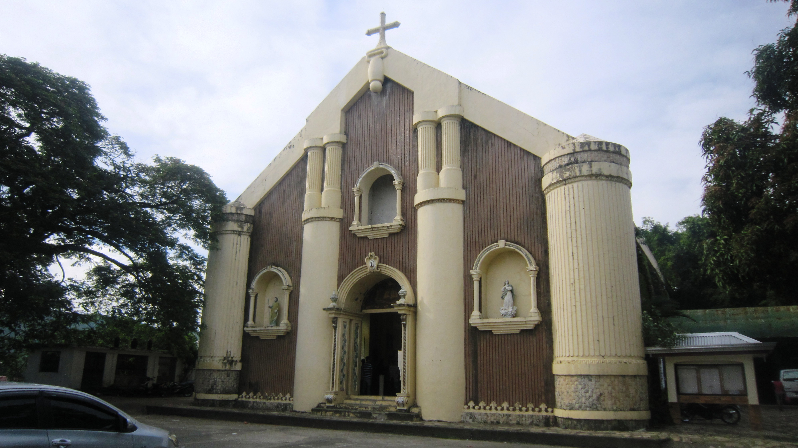
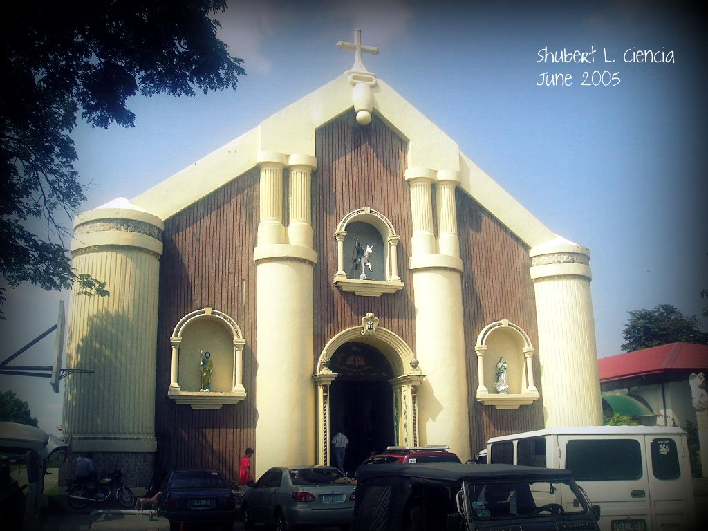

St. James the Greater Parish is a prominent religious structure located in the municipality of Cantilan, known for its simple yet dignified architectural design. The church features a classic façade that reflects traditional Catholic influences, with a spacious interior that accommodates a large number of worshippers. Its altar is carefully designed and serves as the central focus during religious ceremonies and gatherings. The overall atmosphere inside the church is solemn and peaceful, encouraging prayer and reflection. The building stands as a spiritual landmark within the community.
The surroundings of the parish contribute to its serene and welcoming environment. Its location within the town makes it easily accessible for both locals and visitors. Inside, religious images and decorations enhance the sacred ambiance of the space. Natural lighting adds warmth and clarity to the interior, making it inviting for worshippers. Overall, the parish offers a meaningful setting for spiritual activities and quiet contemplation.


Founded during the Spanish colonial era, the parish emerged as part of the Catholic mission expansion in northeastern Mindanao. The early church structure, built primarily from local materials, reflected the simple architecture of frontier missions. Over the years, it evolved into a permanent parish, guiding the religious life of the community even through political transitions and natural disasters.
The present church building features a mix of colonial and contemporary design elements. It often showcases a cruciform floor plan, stained-glass windows depicting the life of St. James, and a bell tower overlooking the Cantilan town center. Renovations have maintained traditional aesthetics while reinforcing the structure against Mindanao’s humid and seismic environment.


St. James the Greater Parish serves as a focal point for faith and cultural celebration. Its annual fiesta on July 25 attracts residents and pilgrims, combining liturgical rites with local festivities, processions, and music. The parish also supports educational and social initiatives under the Diocese of Tandag, strengthening its role as both a spiritual and civic institution.